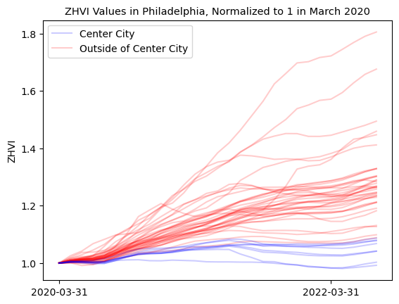

Code
import pandas as pdIn this assignment, we will practice our pandas skills and explore the “Donut Effect” within Philadelphia. The “Donut Effect” describes the following phenomenon: with more flexible working options and pandemic-driven density fears, people left urban dense cores and opted for more space in city suburbs, driving home and rental prices up in the suburbs relative to city centers.
We will be working with Zillow data for the Zillow Home Value Index (ZHVI) for Philadelphia ZIP codes. The goal will be to calculate home price appreciation in Philadelphia, comparing those ZIP codes in Center City (the central business district) to those not in Center City.
I’ve already downloaded the relevant data file and put in the data/ folder. Let’s load it using pandas.
Note: Be sure to use a relative file path to make it easier to load your data when grading. See this guide for more info.
import pandas as pd#import and check data
alldata = pd.read_csv("data/Zip_zhvi_uc_sfrcondo_tier_0.33_0.67_sm_sa_month.csv")
alldata.head(3)| RegionID | SizeRank | RegionName | RegionType | StateName | State | City | Metro | CountyName | 2000-01-31 | ... | 2021-10-31 | 2021-11-30 | 2021-12-31 | 2022-01-31 | 2022-02-28 | 2022-03-31 | 2022-04-30 | 2022-05-31 | 2022-06-30 | 2022-07-31 | |
|---|---|---|---|---|---|---|---|---|---|---|---|---|---|---|---|---|---|---|---|---|---|
| 0 | 61639 | 0 | 10025 | Zip | NY | NY | New York | New York-Newark-Jersey City | New York County | 329164.0 | ... | 1153364.0 | 1152736.0 | 1153314.0 | 1159292.0 | 1171216.0 | 1190200.0 | 1207107.0 | 1221417.0 | 1227148.0 | 1234232.0 |
| 1 | 84654 | 1 | 60657 | Zip | IL | IL | Chicago | Chicago-Naperville-Elgin | Cook County | 311718.0 | ... | 523727.0 | 526511.0 | 528499.0 | 529879.0 | 530092.0 | 532758.0 | 534840.0 | 539859.0 | 543658.0 | 546709.0 |
| 2 | 61637 | 2 | 10023 | Zip | NY | NY | New York | New York-Newark-Jersey City | New York County | 510209.0 | ... | 1517150.0 | 1521442.0 | 1521759.0 | 1532449.0 | 1542269.0 | 1559390.0 | 1572653.0 | 1591368.0 | 1600569.0 | 1607770.0 |
3 rows × 280 columns
Select the subset of the dataframe for Philadelphia, PA.
#show column list
alldata.columnsIndex(['RegionID', 'SizeRank', 'RegionName', 'RegionType', 'StateName',
'State', 'City', 'Metro', 'CountyName', '2000-01-31',
...
'2021-10-31', '2021-11-30', '2021-12-31', '2022-01-31', '2022-02-28',
'2022-03-31', '2022-04-30', '2022-05-31', '2022-06-30', '2022-07-31'],
dtype='object', length=280)#trim data to just Pennsylvania, excluding any Philadelphia from other states
pennsyl = alldata["State"].isin(["PA"])
trim_pennsyl = alldata.loc[pennsyl]
#check unique data selected
trim_phila['State'].unique()array(['PA'], dtype=object)#trim data to just Philadelphia in Pennsylvania
phila = trim_pennsyl["City"].isin(["Philadelphia"])
trim_phila = trim_pennsyl.loc[phila]
#check unique data selected
trim_phila['City'].unique()array(['Philadelphia'], dtype=object)Let’s transform the data from wide to tidy using the pd.melt() function. Create a new column in your data called “ZHVI” that holds the ZHVI values.
#function that test if a string column name starts with '20'
def looks_like_a_date(column_name):
return column_name.startswith("20")#test the function
looks_like_a_date("2000-01-31")True#get values by explicitly pass to list() function
philalist = list(
filter(looks_like_a_date, trim_phila.columns)
)
#remove hashtag symbol (#) below to check
#philalist#use melt function for converting from wide formats to tidy formats
pd.melt(
trim_phila,
id_vars=["RegionName", "Metro", "CountyName"],
value_vars=list(
filter(looks_like_a_date, trim_phila.columns)
),
var_name="Date",
value_name="ZHVI",
)--------------------------------------------------------------------------- NameError Traceback (most recent call last) Cell In[3], line 2 1 #use melt function for converting from wide formats to tidy formats ----> 2 pd.melt( 3 trim_phila, 4 id_vars=["RegionName", "Metro", "CountyName"], 5 value_vars=list( 6 filter(looks_like_a_date, trim_phila.columns) 7 ), 8 var_name="Date", 9 value_name="ZHVI", 10 ) NameError: name 'pd' is not defined
#apply melt function
phila_tidy = trim_phila.melt(
id_vars=["RegionName","Metro", "CountyName"],
value_vars=list(filter(looks_like_a_date, trim_phila.columns)),
var_name="Date",
value_name="ZHVI",
)
#check
phila_tidy.head(5)| RegionName | Metro | CountyName | Date | ZHVI | |
|---|---|---|---|---|---|
| 0 | 19143 | Philadelphia-Camden-Wilmington | Philadelphia County | 2000-01-31 | 60701.0 |
| 1 | 19111 | Philadelphia-Camden-Wilmington | Philadelphia County | 2000-01-31 | 85062.0 |
| 2 | 19124 | Philadelphia-Camden-Wilmington | Philadelphia County | 2000-01-31 | 47155.0 |
| 3 | 19120 | Philadelphia-Camden-Wilmington | Philadelphia County | 2000-01-31 | 59285.0 |
| 4 | 19104 | Philadelphia-Camden-Wilmington | Philadelphia County | 2000-01-31 | 74255.0 |
To compare home appreciation in Center City vs. outside Center City, we’ll need to split the data into two dataframes, one that holds the Center City ZIP codes and one that holds the data for the rest of the ZIP codes in Philadelphia.
To help with this process, I’ve included a list of ZIP codes that make up the “greater Center City” region of Philadelphia. Use this list to split the melted data into two dataframes.
#first, check the total number of unique ZIP codes
phila_tidy['RegionName'].nunique()46#List of the greater Center City
greater_center_city_zip_codes = [
19123,
19102,
19103,
19106,
19107,
19109,
19130,
19146,
19147,
]
#there are total 9 ZIP codes. Remember, the count starts from 0, so it is equal to 8 in Python#split the data for ZIP codes in Center City
phila_center_sel = phila_tidy['RegionName'].isin(greater_center_city_zip_codes)
phila_center = phila_tidy.loc[phila_center_sel]
#verify the total number of unique ZIP codes in Center City
phila_center['RegionName'].nunique()8#split the data for ZIP codes outside Center City by adding tildes symbol (~) to invert the result
phila_outside_sel = ~phila_tidy['RegionName'].isin(greater_center_city_zip_codes)
phila_outside = phila_tidy.loc[phila_outside_sel]
#verify the total number of unique ZIP codes outside Center City
phila_outside['RegionName'].nunique()38In this step, we’ll calculate the average percent increase in ZHVI from March 2020 to March 2022 for ZIP codes in/out of Center City. We’ll do this by:
You should see much larger growth for ZIP codes outside of Center City…the Donut Effect!
#use groupby operation for Center City
center_grouped = phila_center.groupby("RegionName")
center_grouped<pandas.core.groupby.generic.DataFrameGroupBy object at 0x000001C8CD407C10>#use groupby operation for outside of Center City
outside_grouped = phila_outside.groupby("RegionName")
outside_grouped<pandas.core.groupby.generic.DataFrameGroupBy object at 0x000001C8CD4079D0>#set up the function to calculate percent increase
def calculate_percent_increase(group_df):
"""
Calculate the percent increase from 2020-03-31 to 2022-03-31.
Note that `group_df` is the DataFrame for each group.
"""
#create selections for the march 2020 and march 2022 data
march2020_sel = group_df["Date"] == "2020-03-31"
march2022_sel = group_df["Date"] == "2022-03-31"
#get the data for each month (only 1 row, so squeeze it!)
march_2020 = group_df.loc[march2020_sel].squeeze()
march_2022 = group_df.loc[march2022_sel].squeeze()
#columns to calculate percent change for
columns = ["ZHVI"]
#return the percent change for both columns
return 100 * (march_2022[columns] / march_2020[columns] - 1)#apply function for Center City
center_result = center_grouped.apply(calculate_percent_increase)
center_result.round(2).sort_values(by="ZHVI", ascending=True)| ZHVI | |
|---|---|
| RegionName | |
| 19102 | -1.72 |
| 19103 | -1.70 |
| 19106 | 2.52 |
| 19107 | 2.88 |
| 19123 | 5.21 |
| 19147 | 6.14 |
| 19146 | 6.48 |
| 19130 | 6.67 |
#apply function for outside of Center City
outside_result = outside_grouped.apply(calculate_percent_increase)
outside_result.round(2).sort_values(by="ZHVI", ascending=True)| ZHVI | |
|---|---|
| RegionName | |
| 19148 | 6.96 |
| 19145 | 7.63 |
| 19122 | 10.28 |
| 19125 | 11.01 |
| 19104 | 14.54 |
| 19129 | 15.60 |
| 19119 | 17.48 |
| 19118 | 17.59 |
| 19154 | 17.93 |
| 19150 | 18.74 |
| 19151 | 19.65 |
| 19127 | 20.02 |
| 19126 | 20.82 |
| 19114 | 21.07 |
| 19144 | 21.09 |
| 19128 | 21.89 |
| 19152 | 21.99 |
| 19115 | 22.46 |
| 19116 | 23.08 |
| 19137 | 23.25 |
| 19131 | 23.36 |
| 19134 | 23.94 |
| 19143 | 23.95 |
| 19138 | 24.66 |
| 19149 | 24.92 |
| 19121 | 26.23 |
| 19141 | 26.44 |
| 19136 | 26.49 |
| 19120 | 26.93 |
| 19135 | 28.12 |
| 19111 | 28.69 |
| 19124 | 28.74 |
| 19133 | 36.14 |
| 19139 | 37.01 |
| 19153 | 38.24 |
| 19142 | 44.56 |
| 19140 | 57.15 |
| 19132 | 72.22 |
#Calculate the average of ZVHI for Center City
#first trim to dates from March 2020 onwards, then group by county name
center_group_avg = phila_center.query("Date >= '2020-03-31'").groupby("RegionName")
#select the columns we want, and then use the built-in mean function
center_avg_prices = center_group_avg[['ZHVI']].mean()
center_avg_prices.round(2).sort_values("ZHVI")| ZHVI | |
|---|---|
| RegionName | |
| 19107 | 329753.62 |
| 19102 | 350272.86 |
| 19146 | 383751.90 |
| 19106 | 403091.93 |
| 19130 | 415658.14 |
| 19123 | 434565.00 |
| 19147 | 449165.59 |
| 19103 | 485132.55 |
#Calculate the average of ZVHI for outside of Center City
#first trim to dates from March 2020 onwards, then group by county name
outside_group_avg = phila_outside.query("Date >= '2020-03-31'").groupby("RegionName")
#select the columns we want, and then use the built-in mean function
outside_avg_prices = outside_group_avg[['ZHVI']].mean()
outside_avg_prices.round(2).sort_values("ZHVI")| ZHVI | |
|---|---|
| RegionName | |
| 19132 | 72876.31 |
| 19133 | 79160.59 |
| 19140 | 85369.00 |
| 19142 | 112555.34 |
| 19134 | 113333.62 |
| 19139 | 136885.83 |
| 19124 | 146376.34 |
| 19120 | 150320.55 |
| 19143 | 163704.69 |
| 19131 | 164191.28 |
| 19141 | 170270.69 |
| 19135 | 177200.17 |
| 19138 | 180707.97 |
| 19151 | 188517.17 |
| 19144 | 192884.14 |
| 19149 | 201986.45 |
| 19137 | 203351.48 |
| 19153 | 207402.00 |
| 19136 | 209371.83 |
| 19104 | 212173.86 |
| 19126 | 213010.90 |
| 19150 | 223884.34 |
| 19121 | 228255.28 |
| 19111 | 241814.21 |
| 19114 | 260346.55 |
| 19148 | 264084.00 |
| 19152 | 266799.03 |
| 19154 | 268096.76 |
| 19145 | 268546.66 |
| 19129 | 279712.62 |
| 19127 | 292084.38 |
| 19122 | 294285.66 |
| 19115 | 302948.93 |
| 19128 | 309381.59 |
| 19116 | 317510.48 |
| 19119 | 327088.48 |
| 19125 | 328043.97 |
| 19118 | 681192.62 |
Based on ZHVI data from March 31, 2020, to March 31, 2022, it is evident that home price appreciation changes for properties in city suburbs of Philadelphia are consistently higher than those in the central business district.
Among the neighborhoods outside Center City, the Chestnut Hill area (ZIP Code: 19118) reported the highest average ZHVI, reaching $681,192.62. In contrast, the lowest average ZHVI was observed in Strawberry Mansion area (ZIP Code: 19132), with a significantly lower average of $72,876.00. Within Center City, the average ZHVI across the 9 selected ZIP codes varied from $329,753.62 to $485,132.55.
The percent change in ZHVI from 2020 to 2022 reveals a contrasting trend between two zones. The percent change for properties outside Center City ranged from 6.96% to 72.22% over two years, whereas the change within Center City fluctuated between -1.72% and 6.67%. This disparity highlights a donut effect, suggesting that properties in the central business district have become less attractive as homebuyers increasingly seek options in the surrounding areas.
The ZHVI comparison for the period is illustrated in the graph below. Please note that all values have been normalized to 1 as of March 2020.
#create a graph to compare ZHVI between Center City and outside of Center City
from matplotlib import pyplot as plt
from matplotlib.lines import Line2D#create the figure and axes
fig, ax = plt.subplots()
#iterate over the data, grouped by county name
for countyName, group_df in phila_outside.groupby("RegionName"):
#trim to where Date > March 2020
#sort by Date in ascending order
group_df = group_df.sort_values("Date").query("Date >= '2020-03-01'")
#date vs. ZHVI
x = group_df["Date"]
y = group_df["ZHVI"]
#trime
ax_out = ax.plot(x, y / y.iloc[0], color="red", alpha=0.2)
#iterate over the data, grouped by county name
for countyName, group_df in phila_center.groupby("RegionName"):
#trim to where Date > March 2020
#sort by Date in ascending order
group_df = group_df.sort_values("Date").query("Date >= '2020-03-01'")
#date vs. ZHVI
x = group_df["Date"]
y = group_df["ZHVI"]
#trime
ax.plot(x, y / y.iloc[0], color="blue", alpha=0.2)
#format and add a legend
ax.set_title("ZHVI Values in Philadelphia, Normalized to 1 in March 2020", fontsize=10.5)
ax.set_xticks(["2020-03-31", "2022-03-31"])
plt.ylabel("ZHVI", fontsize=10)
handles, labels = plt.gca().get_legend_handles_labels()
line1 = Line2D([0], [0], label='Center City', color='blue', alpha=0.2)
line2 = Line2D([0], [0], label='Outside of Center City', color='red', alpha=0.2)
handles.extend([line1, line2])
ax.legend(handles=handles)